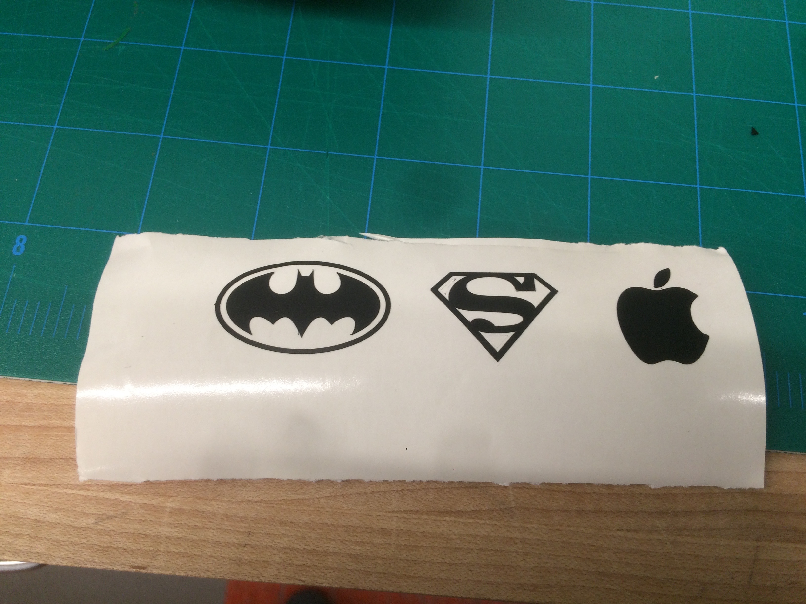
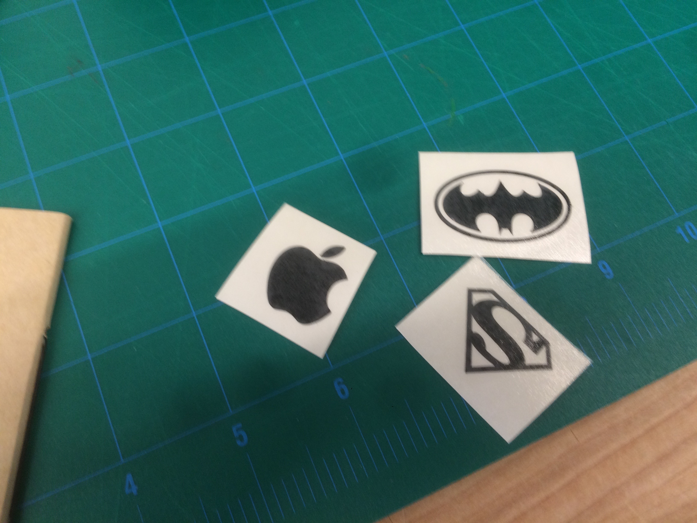
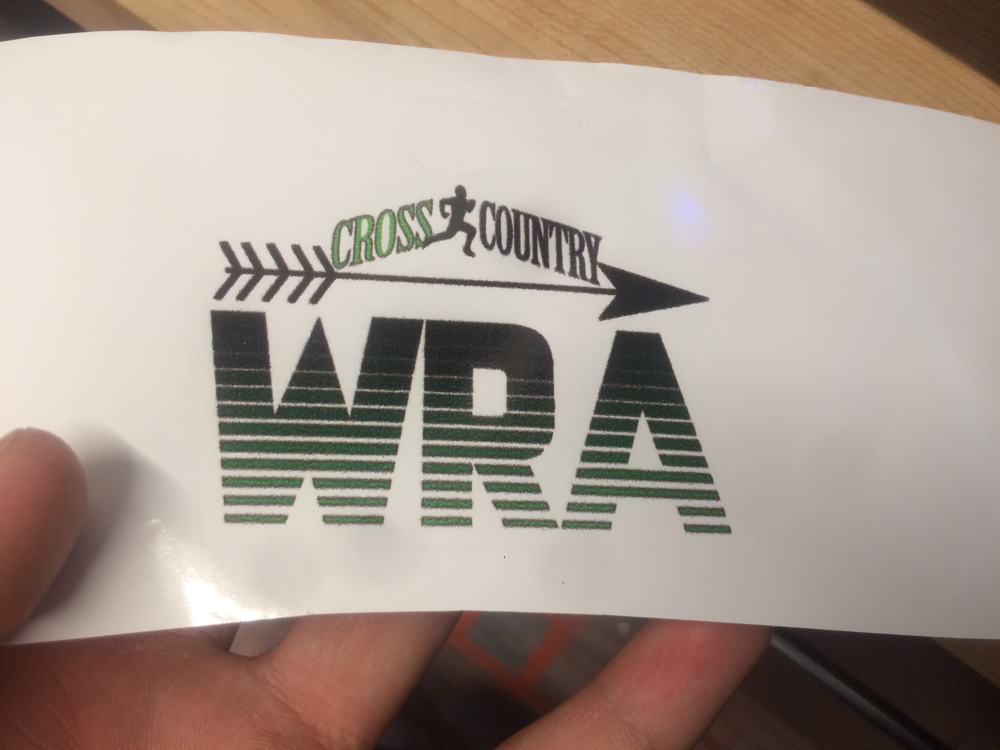
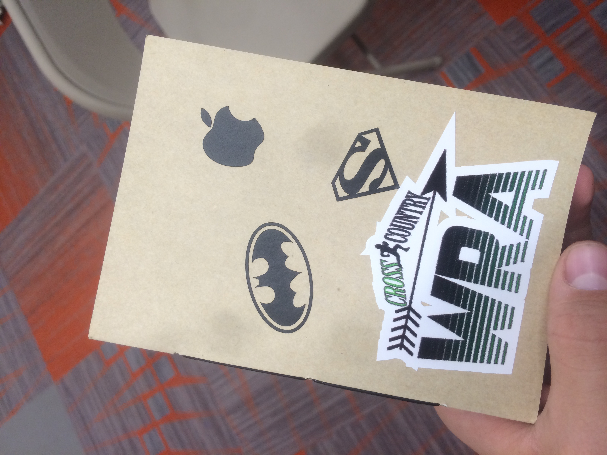

Making Stickers with the Roland GS-24 and Roland 540i
For this part of the project we were tasked to make 5 stickers, three one-color vinyls with the Roland GS-24,
and two full color stickers with the Roland 540i. Here are some pictures of the proces.




Molding From A Negative
For this part of the rotation, I had to make a chocolate bar in fusion 360 that I would later put in the
CNC miller so that is the chocolate bar in wax. Then we were supposed to add FoodGrade Sylicon to make
a negative mold from where to cast multiple chocolate bars. We only got to the part of the CNC milling machine.

This is the files that corresponds to the Chocolate bar:
Chocolate Bar
Molding A Coaster
To end the rotation we made Coasters using Urethane and epoxy. We first put the 2 part urethane with some
drops of colorant if we wanted it to have color into the mold and we waited for 24h. Then we put an object of
our choice inside and filled it with clear epoxy and let it set again.

I'm really happy with this project because I encapsulated some things of the Fall Musical: Urinetown with meant a lot
to me.